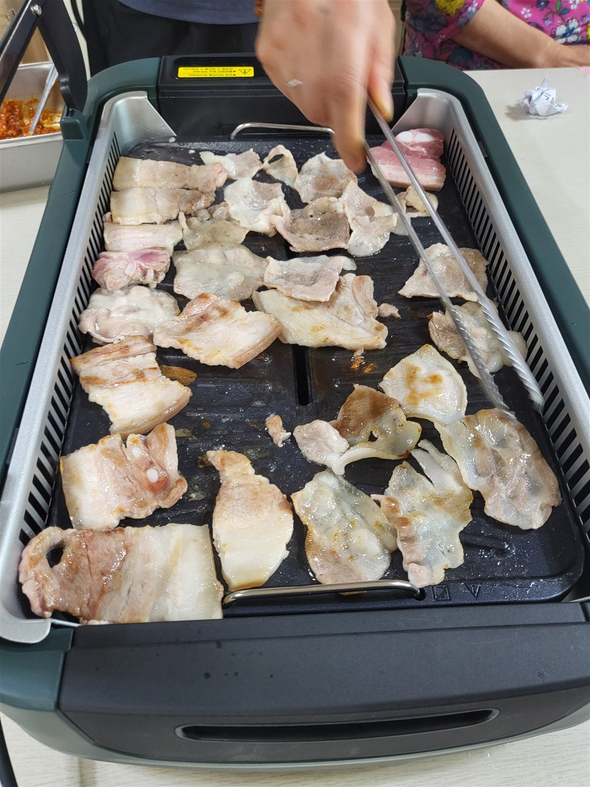

프로그램
인지·여가 활동과 계절 프로그램의 준비 과정과 분위기
블로그에서 보기SilverMedical Stories
프로그램과 식사, 계절 행사를 사진과 영상으로 전합니다.
센터 소식
프로그램과 식사, 계절 행사, 보호자께 도움이 되는 안내를 네이버 블로그와 유튜브에 정리하고 있습니다.
어르신과 함께하는 일상의 모습과 센터의 새로운 소식을 편안하게 만나보세요.
네이버 블로그
프로그램, 식사, 계절 소식과 보호자 안내를 자세히 확인하세요.
네이버 블로그 바로가기유튜브 채널
센터의 분위기와 활동 모습을 영상으로 만나보세요.
유튜브 채널 바로가기
식사와 계절 행사
특별한 식사와 계절 행사는 익숙한 일상에 기분 좋은 변화를 더합니다.
어르신의 컨디션과 식사 상태를 살피며, 부담 없이 참여하고 편안하게 즐기실 수 있도록 준비합니다.